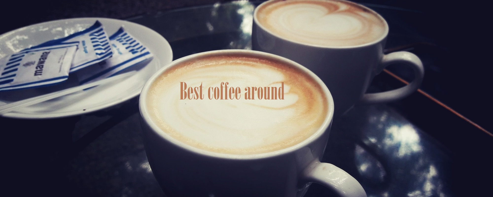
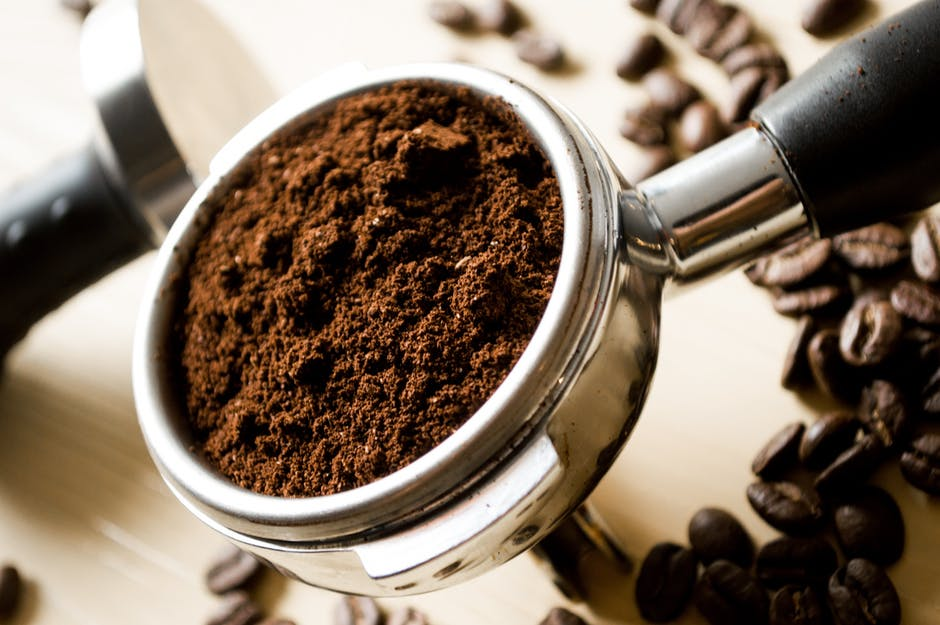
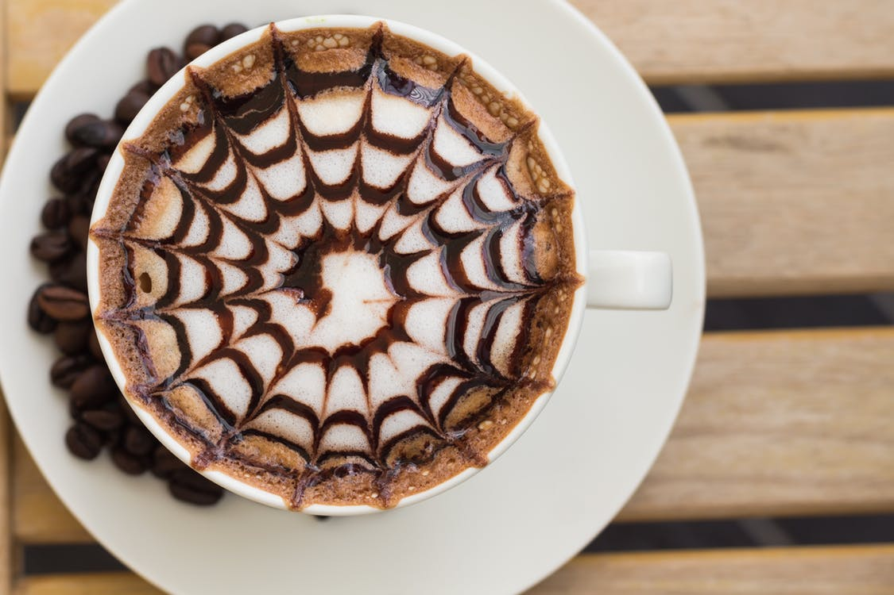

Check out some of our best art

Happiness in the making
Curving happiness
Happy :)

The source of energy

Attention to every detail

Time machine
Start your day with a splash

Greatness takes time
Always start positive
Calm yourself
Never go empty
Beautiful mess
A variety of coffees to choose from
| Coffee | Small | Medium | Large |
|---|---|---|---|
| Espresso | £2.40 | £2.90 | £3.00 |
| Double Espresso | £2.80 | £3.00 | £3.30 |
| Short Macchiato | £2.20 | £2.60 | £3.00 |
| Long Macchiato | £2.70 | £2.90 | £3.30 |
| Ristretto | £2.00 | £2.40 | £2.70 |
| Americano | £2.00 | £2.40 | £2.70 |
| Cafe Latte | £2.00 | £2.40 | £2.70 |
| Piccolo Latte | £1.00 | £1.40 | £1.70 |
| Flat White | £2.00 | £2.40 | £2.70 |
| Cappucino | £2.00 | £2.20 | £2.50 |
About us
Coffee is a brewed drink prepared from roasted coffee beans, which are the seeds of berries from the Coffea plant. The genus Coffea is native to tropical Africa, and Madagascar, the Comoros, Mauritius and Réunion in the Indian Ocean.[2] The plant was exported from Africa to countries around the world and coffee plants are now cultivated in over 70 countries, primarily in the equatorial regions of the Americas, Southeast Asia, India, and Africa. The two most commonly grown are the highly regarded arabica, and the less sophisticated but stronger and more hardy robusta. Once ripe, coffee berries are picked, processed, and dried. Dried coffee seeds (referred to as beans) are roasted to varying degrees, depending on the desired flavor. Roasted beans are ground and brewed with near boiling water to produce coffee as a beverage.
Coffee beans must be ground and brewed to create a beverage. The criteria for choosing a method include flavor and economy. Almost all methods of preparing coffee require that the beans be ground and then mixed with hot water long enough to allow the flavor to emerge but not so long as to draw out bitter compounds. The liquid can be consumed after the spent grounds are removed. Brewing considerations include the fineness of grind, the way in which the water is used to extract the flavor, the ratio of coffee grounds to water (the brew ratio), additional flavorings such as sugar, milk, and spices, and the technique to be used to separate spent grounds. Ideal holding temperatures range from 85–88 °C (185–190 °F) to as high as 93 °C (199 °F) and the ideal serving temperature is 68 to 79 °C (154 to 174 °F).[96] The recommended brew ratio for non-espresso coffee is around 55 to 60 grams of grounds per litre of water, or two level tablespoons for a 5- or 6-ounce cup.
The earliest credible evidence of coffee-drinking appears in the middle of the 15th century in the Sufi shrines of Yemen.[6] It was here in Arabia that coffee seeds were first roasted and brewed in a similar way to how it is now prepared. Coffee seeds were first exported from East Africa to Yemen, as the coffea arabica plant is thought to have been indigenous to the former.[7] Yemeni traders took coffee back to their homeland and began to cultivate the seed. By the 16th century, it had reached Persia, Turkey, and North Africa. From there, it spread to Europe and the rest of the world.